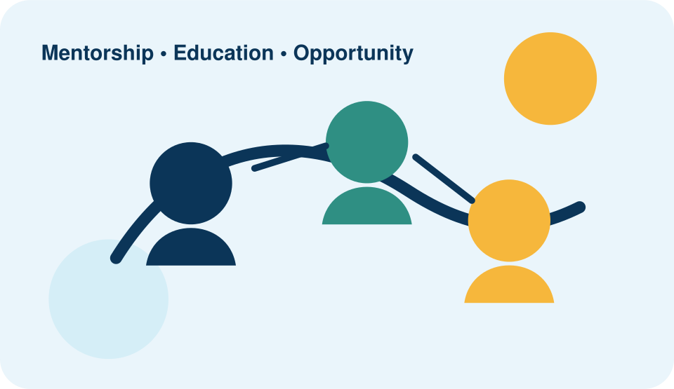

🎓
Educational Support
Support with research, assignments, exam preparation and higher-education applications.
iMentorU Foundation is a registered youth development and mentorship organisation focused on helping children and youth grow through education, career guidance, skills development and meaningful support.

Our programmes are designed to provide practical learning, guidance, exposure and encouragement.
Support with research, assignments, exam preparation and higher-education applications.
Guidance that helps young people understand opportunities, build skills and plan for their futures.
Opportunities to explore science, technology, engineering, agriculture and mathematics through practical learning.
Join a community working to inspire, empower and support young people.
Mentor, volunteer, partner or support the work of iMentorU Foundation.
This website is an academic front-end project created from the organisation's publicly available information. Forms are demonstration forms and do not send real applications.